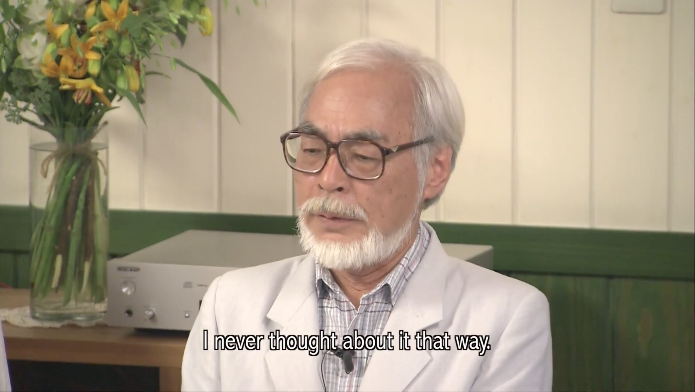

The Politics of Hayao Miyazaki's Cinema
Hayao Miyazaki (born in Tokyo the fifth of January 1941) alongside the well-known Studio Ghibli have been creating stories for three decades now, where the fantasy worlds and the real one are entangled in a way that they serve not only to the pure entertaining purpose but also to transmit a political message. The three main political aspects touched by Miyazaki´s cinema are the protection of the environment and the reconciliation of society with nature, the role of women as heroines that drive change and progress, and ultimately, pacifism. Strong female characters (as in Nausica Of The Valley Of The Wind and Princess Mononoke), ecology (as in My Neighbor Totoro), and the rejection of totalitarism (as in Howl´s Moving Castle) have made Miyazaki´s cinema gain strong political importance and have generated lots of academic material around it. All through the extensive production of the Studio Ghibli these themes are recurring, resulting in a recognizable authorship that makes it worthy of study.
Miyazaki´s political position has always been publicly exposed, he has not tried to avoid admitting the deliberate treatment of the issues addressed by his movies, but on the contrary the director himself has helped to unravel the allegories found in them. Moreover, he does not make an effort to hide his appreciation for Marxist thought during his youth (he has later defended the practice of socialist tenets in the methodology of work and organization of his Studio Ghibli), as well as his profound discontent with Japanese society and Japanese identity in his early years when Japan was coming out of the Second World War after having put in check the whole of the eastern Asian continent with clear imperial ambitions. Although he never abandoned his leftist beliefs, he went on to reject Marxism for things he deemed negative such as the inescapable distinction of classes. Capitalism and globalization have been addressed in his films, not in a determinate rejection of them but rather as a reflection on modern life. More than trying to give answer to the dilemmas of human society within itself, his cinema has been concerned with observing the impact of modern life upon nature, but at the same time revealing the struggles of the inequities that the capitalist system generates. However the ideas that are suggested in his films are not entirely his particular construct, but they take elements of historically Japanese cultural traits.
A parallelism can be drawn with contemporary Slovenian philosopher Slavoj Zizek. Zizek is probably the most important European leftist intellectual of the time, and similarly to Miyazaki, he also comes from the Marxist tradition and has evolved to adapt his understanding of Marxist principles to the present socio-economic conjuncture. Zizek believes in emancipation, social justice, ecology, etc. but he advocates for an all-round activism, for he considers that the struggles of the present society can hardly be individualized and separated from each other, but rather they need to be addressed and contested transversally. This is an observable feature of Miyazaki’s cinema. When watching Miyazaki’s films, one is not thinking ‘he is clearly addressing women’s role in society’ or ‘here he is criticizing capitalism’ but rather all these elements are greatly entangled in a way that only through explicit effort they can be separated for reflection, while at the same time they come with very pleasing aesthetics. This entanglement is found in the image of the author himself, Miyazaki is not only a master of anime or only a political-activist artist, but he is both at the same time.
In the last decades Manga and Anime is becoming more commonly regarded in Japan as the most popular medium of artistic expression, as valid as literature or cinema are in the West. Manga comics touch every aspect of social life, and its public is not only restricted to children and young people, as it was in the past, but people of all ages now eagerly consume Manga comics and Anime. Studio Ghibli is at the same time responsible for and beneficiary of this, for it is one of the main actors that have put anime in the mainstream in Japan, and have even exported it to the rest of the world, with anime movies being released in all continents and with great success.
With Miyazaki announcing his retirement in 2014 (not only his, but also Studio Ghibli’s closure), his films can now be seen as a whole work that is subject to study. For the purpose of this paper we will focus mainly on two of the most popular movies the studio has produced: Nausicaä of the Valley of the Wind (1984) and Princess Mononoke (1997). These two films have a clear political element loaded into them, hence they are quite representative of the aspect of Miyazaki’s cinema that is interesting for a politics student.
Nausicaä of the Valley of the Wind is the second feature-length film from the director, and through the years it has stood the so-called test of time and has become a cult classic. The fact that the film has not become old or forgettable is not only due to the sheer quality of its art, but also to the fact that the issues addressed in it are very present in our society, and are likely to be so for a long time.
Princess Nausicaä lives in a small town in a valley close to the sea, where there is a kind of a cloud toxic to humans, which they call “sea of decay” or fukai as in the original version. Knowing about the dangerous toxicity, she wears a mask and approaches it every day to try and understand the origin of such pollution. This is, she knows all form of evil has had to be good, which was at some point turned bad. The fluidity of good and evil is very noticeable in Miyazaki’s cinema; no element is condemned to the place of evil or good forever, but these categories can be altered at any time with the help of other elements.
The popular Japanese tale White Mouse where a beast-like mouse is finally accepted into the family core and from there everything is as normal as any other family, is a good example of how the categories of good and evil in Japanese culture are not as inescapable as in western culture. In Miyazaki´s cinema the bad elements are never pure evil, but rather traumatic events have changed their good nature into maleficent beasts. These beasts can also be freed from the pain that causes them to be bad and become then a good element, which was always its true form. Good can incarnate evil and resemble it to the last extent, but is always a consequence and not a natural attribute. The interplay of Christ (or God) and the Devil in Christian culture is much more static, one is the absolute opposite of the other, and they can never change places, not even in disguise.
Nausicaä reveals that the sea of decay is not inherently bad with an experiment: through feeding plants from the toxic environment with clean earth and water, the plants grow healthy and can be positively consumed by humans. This demonstrates that pollution is what makes them take an evil appearance, it is not their nature.
Parallel to the struggle with pollution there is the struggle of war. Nausicaä’s Valley of the Wind is embattled by larger and highly militarized communities. Her rural community is not harmful to nature; they eat mostly vegetables and don’t have any military machinery. The equilibrium they have reached by being safeguarded by the wind from the sea is at one time broken when the foreign invaders arrive with highly developed artillery. So here we have a female protagonist trying to free her hometown from both pollution and war. With all its war and dirt scenes, the film is a call for ecology and pacifism.

We can also observe in this movie a typical treat of Miyazaki’s cinema that is also in tune with Japanese-Buddhist tradition, it is the fact that each element of the world plays its particular role in the harmony that allows life to happen. So the air (wind), the earth, water, men etc. all play a specific and equally important role in the story. Not only this, but the form of energy that prevails here is wind energy, a clean, non-toxic energy.
Many have compared Miyazaki’s figure to that of Walt Disney, although Miyazaki himself has rejected the comparison. In a similar fashion, Kraemer has written an article in which she compares two of Disney’s female heroines to two of the Miyazaki’s: Mulan and Pocahontas to Nausicaä and San (Mononoke-Hime). She shows how even though Pocahontas is depicted as a strong beautiful young woman, she is regarded by her community simply as a rebellious girl, with her father asking her to marry and settle down in order to fit what her community expects of her. Nausicaä in the other hand is already freed from this patriarchic condescension, she is regarded by the community as a leader and her skills are acknowledged and admired unanimously by the villagers. (Kraemer, 2011)
While Nausicaä is a child of the village who tries to redeem the humans in face of their relationship from the forest, San is a child of the forest who under the protection of the goddess-wolf Moro fights alongside the animals in order to defeat the iron-mine village responsible for the destruction of the forest. Contrarily to Nausicaä, San is not depicted as a pretty young girl who is pleasing to watch, but she is presented as more-animal-than-human that genuinely hates humans to whom she, being a skillful fighter, is very frightening. The leader of the village, Lady Eboshy, is also a woman with great military and economic skills as well as political power. No comment is made about their gender, in fact men obey Lady Eboshy’s orders and fear San in a way it would be very odd to Western culture. Typical masculine behaviors such as aggressiveness, belligerence and leadership are attributed here to female characters with absolute normality. However this is not an attribute of Japanese culture (Manga girls are always very feminine and not very intelligent) but is exclusive to Miyazaki’s world. (K. Olowu, 2013)
As Yamanaka explains Miyazaki himself is concerned with explaining the underlying messages and allegories of his films, rather than just leave that space open for critics and more generally intellectuals to unravel, he states that he makes cinema for children but the histories are not trivial, they contain a complex mix of Japanese ancient culture and a sense of postmodernity. Moreover, there are recurring themes in his films, a very recognizable mark of style as well as a deliberate particular way to tell the stories. Death and sexuality are not contemplated in his stories, but contrarily it is to be alive that is the ultimate power to change the world around you and bring antagonists closer by smoothing out their differences. Mononoke Hime is a good example of this; being set in fourteenth century´s Muromachi period, the moral-political conflicts depicted in it are still very much valid today.
In Christian-Judeo culture, all of the universe surrounding humans, that is: nature, animals and astrology, are there only for the humans to conquer, use and consume. The hierarchy is clear, God is at the top, then come humans, and everything else is below humans, it is a creation of God for humans to enjoy. Nature is merely the stage of life, but not an entity of the divine realm to be vowed or respected. Harm against humans can provoke the fury of God, but harm against nature is not so important. In Buddhist-Japanese culture, all elements of nature are conferred a spirit (the river has its spirit, the mountain has its spirit, and so on) and therefore regarded more equally to humans in the scale of the divine. Harm to an element of nature, be it humans or animals, is an unbalance to the harmony of the world that necessitates all of its elements to respect each other in order to reach to the ideal order of things. Respect is due to the elements of this world, contrarily to the stigmatization of the mundane in Judeo-Christian tradition, where an illuminate individual is one that pledges respect to God but not necessarily to the world he lives in. Moreover, the roles of humans, nature, animals, and gods are interchangeable in Japanese-Buddhist tradition, one can have been the other in a past life or become the other in a future life. This aspect is observable in Miyazaki´s stories where harmony comes only with the reconciliation of humans with their natural environment, and as Yamanaka explains this doesn´t mean that humans need to be detached to their human nature, but rather with the understanding and respect of the environment comes also the strength of the sense of humanity. (2008; Yamanaka 253, Pandey 224)
In Princess Mononoke, this is well observable. The real protagonist, the most weighing entity of the story is the forest. Through the impersonation of the forest in the spirit of the Shishigami as well as other deities in the form of animals, we can see how each element of nature is depicted as a mysterious entity whose existence is noble, and their significance is such that slaughtering them can cause the human world to collapse.

Again in this film we can see how Miyazaki hardly ever condemns any of its characters to be entirely evil. Lady Leboshy, whose ruthless ambition is killing the forest, is at the same time a person who just wants the best for her people and thus will do anything to defend them. She has taken in marginalized elements of the human society (lepers and prostitutes) and given them work, while at the same time treating them with respect.
Even though these films have their narrative in a time very distant to ours (Princess Mononoke in the past and Nausicaä Of The Valley Of The Wind in the future) the issues they address are very appealing to us because they are totally actual. Between the two films there is a twenty five years difference; today the environmental problem occupies news’ headlines all over the world, but back in the 80’s barely any Government was worried about it. In this aspect Miyazaki can claim to be the champion of raising awareness about the relationship of humanity with the world it inhabits. Modernity has detached us from nature to such a degree that even autochthonous animals and vegetation seem almost exotic if we see them in the wild. It is almost ironic that the awareness for an environmentalist reflection comes from what Western intellectuals have called the site of the “postmodern before the fact”, Japan.
References
- Macwilliams, Mark Wheeler. Japanese Visual Culture: Explorations in the World of Manga and Anime. Armonk, NY: M.E. Sharpe, 2008. Print.
- Paik, Peter Yoonsuk. From Utopia to Apocalypse: Science Fiction and the Politics of Catastrophe. Minneapolis: U of Minnesota, 2010. Print.
- Olowu, Karen '14, "Deconstructed Gender Norms in Princess Mononoke" (2013). 2013 Fall Semester. Paper 5.
- "Disney, Miyazaki, and Feminism: Why Western Girls Need Japanese Animation - Christine Hoff Kraemer." Disney, Miyazaki, and Feminism: Why Western Girls Need Japanese Animation – Christine Hoff Kraemer. Web. 20 Apr. 2016.
- Between the Worlds: Liminality and Self-Sacrifice in Princess Mononokeby - Christine Hoff Kraemer April 2004
- MacInnes, Paul. "Hayao Miyazaki: His Final Bow." The Guardian. Guardian News and Media, 03 May 2014. Web. 20 Apr. 2016.
- Miyazaki, H. (Director), Miyazaki, H., Kyonen, H., Hisaishi, J., Kaneko, N., Kida, T., & Saka, S. (Writers), & Takahata, I., & Nakamura, M. (Producers).
(1984). Kaze no tani no Naushika = Nausicaä of the Valley of the Wind [Motion picture]. Japan: Toei, Inc.
- Hayao Miyasaki - Princess Mononoke [Motion picture]. (2002). Milano: Buena Vista.